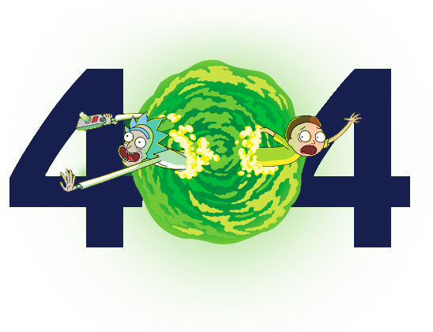

<section class="nopage">
    <div class="container">
        <div class="nopage__content">
            <h1 class="nopage__title">¡Oh no!<br>Te has perdido.</h1>
            <figure class="img-container">
                
            </figure>
            <a class="btn btn-nopage" routerLink="/home">Ir al incio</a>
        </div>
    </div>
</section>